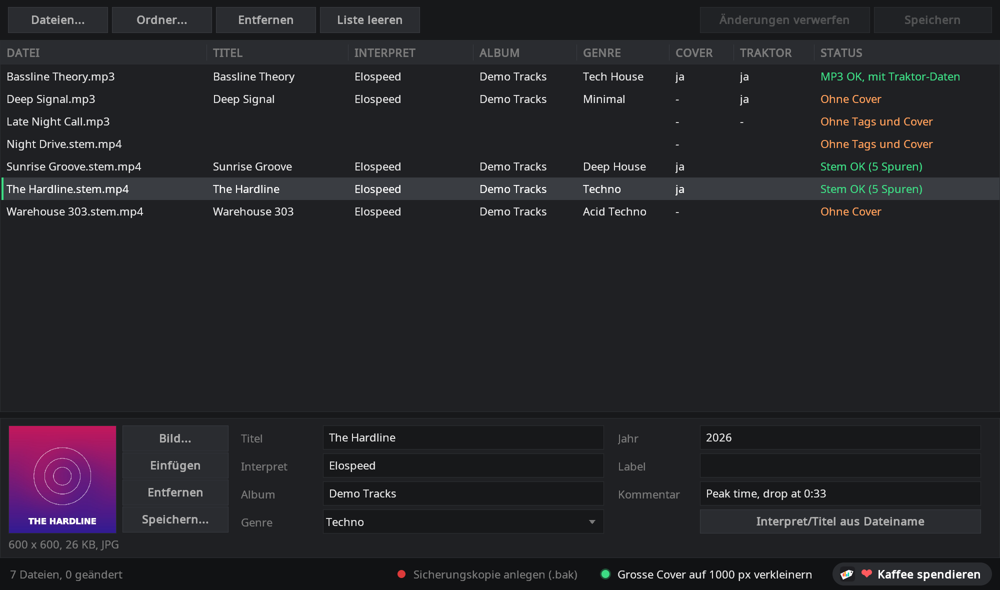
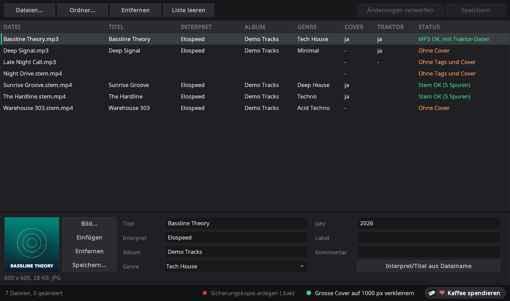

Tags und Cover für deine
Traktor-Stems und MP3s
Der StemTagger setzt Titel, Interpret, Album, Genre und Cover in .stem.mp4- und MP3-Dateien, für einen Track oder einen ganzen Ordner auf einmal. Geändert werden nur die Tags: Die Stems, das Audio und Traktors Cue-Punkte bleiben genau so, wie sie waren. Ein kleines, portables Windows-Programm, kostenlos und Open Source.
- Kostenlos & MIT-Lizenz
- Windows 10 / 11
- Portabel, ohne Installation
- Stem-Dateien und MP3
- Cue-Punkte bleiben erhalten
- 9 Sprachen

Saubere Tags, ohne die Stems zu gefährden
Normale Tag-Editoren schreiben eine Stem-Datei beim Speichern manchmal so um, dass Traktor sie danach nur noch als normalen Track lädt. Der StemTagger ist genau für diese Dateien gemacht.
Die Stems bleiben unangetastet
Nur die Tag-Liste in der Datei ändert sich. Die fünf Audiospuren und die Stem-Daten (Namen und Farben) bleiben Byte für Byte gleich. Die neue Datei wird geprüft, bevor sie das Original ersetzt; stimmt etwas nicht, bleibt das Original, wie es war.
MP3 mit Traktor-Daten
Seit Version 1.1 bearbeitet der StemTagger auch MP3s, mit eigenem ID3-Code. Traktors Cue-Punkte, Loops, Beatgrid und Analyse bleiben erhalten, und eine Spalte zeigt, welche MP3s Traktor schon analysiert hat.
Viele Dateien auf einmal
Dateien oder ganze Ordner hineinziehen (mit Unterordnern), mehrere Zeilen markieren und Album, Genre oder Cover für alle setzen. Felder mit unterschiedlichen Werten zeigen <verschieden> und bleiben pro Datei erhalten, bis du sie änderst.
Cover ganz bequem
Bild aufs Fenster ziehen, im Browser kopieren und mit Strg+V einfügen oder eine Datei wählen. JPEG und PNG bleiben unverändert, grosse Bilder lassen sich auf 1000 Pixel verkleinern, und ein Cover lässt sich auch wieder als Bild speichern.
Fehlendes auf einen Blick
Die Spalte Status zeigt „Ohne Tags“ oder „Ohne Cover“, die Spalten Cover und Traktor zeigen, was schon da ist. Ein Klick auf die Spaltenüberschrift sortiert, und die Lücken in deiner Sammlung stehen ganz oben.
Kleine Helfer
Eine Genre-Liste mit rund 50 Stilen, die beim Tippen ergänzt, Interpret und Titel direkt aus dem Dateinamen (Interpret - Titel.stem.mp4) und auf Wunsch eine Sicherungskopie vor dem ersten Speichern. Das Fenster spricht neun Sprachen, passend zu Windows.
MP3s, und Traktors Cue-Punkte bleiben
Traktor speichert Cue-Punkte, Loops und Beatgrid direkt in der MP3. Viele Programme werfen diese Daten beim Speichern weg. Der StemTagger nicht.
- Ersetzt werden nur die geänderten Felder: Audio und alles andere im Tag bleiben Byte für Byte gleich, auch Traktors eigener Eintrag (
TRAKTOR4) mit Cue-Punkten, Loops, Beatgrid und Analyse - Spalte „Traktor“: zeigt auf einen Blick, welche MP3s Traktor schon analysiert hat
- Dieselben Felder wie bei Stem-Dateien: Titel, Interpret, Album, Genre, Jahr, Label, Kommentar und Cover, in der ID3-Version der Datei (2.3 oder 2.4)
- Getestet mit Traktor Pro 4: MP3 mit Cue-Punkten, Markern und Loop mit dem StemTagger getaggt und neu geladen, alles noch da
- Sehr alte oder beschädigte Tags werden angezeigt, aber nie verändert („Nur lesen“)

So geht's
Drei Schritte, ohne Installation.
- Herunterladen und entpacken
StemTagger-<Version>.zipvon GitHub laden, irgendwohin entpacken undStemTagger.exestarten. Der Ordnerlangmuss daneben bleiben. - Tracks hineinziehen
.stem.mp4-Dateien, MP3s oder ganze Ordner ins Fenster ziehen. Eine oder mehrere Zeilen markieren und unten die Felder ausfüllen, Cover inklusive. - SpeichernAuf Speichern klicken (oder Strg+S). Geschrieben werden nur geänderte Dateien. Danach in Traktor oder Mixxx neu einlesen, und die neuen Tags sind da.
Gehört zur StemMaker-Familie
Elospeed StemMaker macht aus deinen eigenen MP3s Traktor-Stem-Dateien und hat den StemTagger schon als AddOn dabei: ein Klick in der AddOn-Leiste oder Rechtsklick auf eine Datei und „Tags bearbeiten...“. Du hast schon Stem-Dateien und brauchst nur die Tags? Dann reicht der StemTagger allein.
Fragen und Antworten
Ist der StemTagger wirklich kostenlos?
Ja. Der StemTagger ist Open Source unter der MIT-Lizenz. Keine Werbung, kein Konto und keine Bezahlversion. Wenn er dir gefällt, kannst du auf Ko-fi freiwillig etwas spenden.
Warum nicht mein gewohnter Tag-Editor?
Für normale MP3s geht das oft gut. Stem-Dateien sind aber besonders: Neben dem Master enthalten sie vier Stem-Spuren und einen Block mit Namen und Farben der Stems. Manche Tag-Editoren schreiben beim Speichern die ganze Datei neu und lassen diesen Block weg, und Traktor lädt die Datei danach als normalen Track. Manche werfen auch Traktors eigene Daten in MP3s weg (Cue-Punkte, Loops, Beatgrid). Der StemTagger ändert nur die Tag-Einträge und prüft die neue Datei, bevor sie das Original ersetzt.
Welche Dateien kann er bearbeiten?
Traktor-Stem-Dateien (.stem.mp4) und MP3-Dateien. Felder: Titel, Interpret, Album, Genre, Jahr, Label, Kommentar und Cover. Album-Interpret, Track-Nr., BPM und Tonart bleiben so, wie sie in der Datei stehen.
Und BPM und Tonart?
Die ermitteln Traktor und Mixxx beim Analysieren selbst. Werte, die schon in der Datei stehen, bleiben erhalten.
Welche DJ-Software zeigt die Tags an?
Von uns getestet mit Traktor Pro 4 und Mixxx 2.6 Beta: Titel, Interpret, Album, Genre und Cover werden angezeigt, und die Stem-Dateien laden weiterhin als Stems. Programme, die eine Datei schon kennen, müssen ihre Tags eventuell neu einlesen.
Windows zeigt „Der Computer wurde durch Windows geschützt“. Ist das schlimm?
Der StemTagger ist nicht digital signiert, weil Signatur-Zertifikate jedes Jahr Geld kosten. Auf „Weitere Informationen“ und dann „Trotzdem ausführen“ klicken. Der ganze Quellcode liegt auf GitHub, und du kannst den Download bei VirusTotal prüfen oder selbst bauen.
In welcher Sprache läuft er?
In neun Sprachen: Deutsch, Englisch, Spanisch und seit Version 1.2 Französisch, Portugiesisch (Brasilien), Italienisch, Japanisch, Niederländisch und Polnisch. Die sechs neuen sind maschinelle Übersetzungen, die noch kein Muttersprachler gegengelesen hat, Verbesserungen sind sehr willkommen. Allein gestartet richtet sich der StemTagger nach der Sprache von Windows, sonst Englisch. Als AddOn von StemMaker nimmt er die Sprache, die du in StemMaker gewählt hast.
Wo kann ich Fragen stellen oder Ideen vorschlagen?
In den GitHub Discussions von StemMaker. Dort kannst du auch Screenshots und Dateien anhängen. Lesen geht ohne Konto, zum Schreiben braucht es ein kostenloses GitHub-Konto.
Bereit, deine Sammlung aufzuräumen?
ZIP herunterladen, entpacken und den ersten Ordner hineinziehen.
Der StemTagger ist ein Ein-Personen-Hobbyprojekt und bleibt kostenlos. Wenn er dir Zeit spart, kannst du mir auf Ko-fi einen Kaffee spendieren ☕ oder einfach auf GitHub einen Stern geben. Beides ist ganz freiwillig.